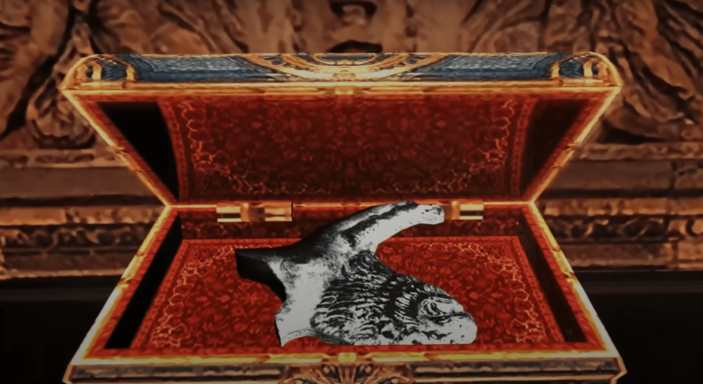

←Episodio 4: Castillo (terrenos)→
Ahora debes fusionar el inventario de Leon con los objetos que Ashley recogió. Si el espacio es limitado, combina los objetos de curación tanto como sea posible. También puedes combinar dos cajas parciales de munición en una si el total es lo suficientemente pequeño. Cuando termines con esto, Salazar llama de nuevo, pero no se dice nada muy importante. El impulso natural en este punto es continuar hacia el norte para recolectar la última pieza faltante del relieve de la sala de audiencias en el Capítulo 3. Tenemos dos de las piezas ahora, el Ornamento de Cabra encontrado en la galería, y el Ornamento de Serpiente encontrado en la sala de almacenamiento. Pero hay algunos caminos opcionales que pasamos por alto antes porque no estaban abiertos, y algunas de las áreas que se despejaron antes ahora tienen enemigos nuevamente.
Entras en una habitación con un pozo de lava al otro lado. Hay un pasaje a la izquierda que conduce a un carrito, pero no necesitamos preocuparnos por él por el momento. Asegúrate de recoger las dos macetas aquí y revisa el gabinete a la derecha para conseguir munición para la pistola. Probablemente sea una buena idea guardar en la máquina de escribir aquí. Sube al artefacto al borde de la lava para ser llevado al otro lado; Ashley permanecerá a salvo aquí por el momento. Te llevan a la cornisa opuesta; atraviesa la puerta hacia una nueva área.
Entras en una gran habitación donde el suelo es un charco de lava. Estás en una cornisa y debes cruzar un pasillo hasta el otro lado. Avanza un poco por la cornisa y verás a un fanático tomar el control de una máquina con forma de dragón. Esta máquina periódicamente escupe llamas por la boca sobre el camino frente a ella. Además, el fanático puede deslizar el dragón para mover diferentes secciones del camino. Si puedes, dispara al fanático mientras desliza el dragón hacia ti; solo tienes un tiro claro desde el lado. Si fallas la primera vez, retrocede al principio y espera a que vuelva a su posición inicial, o espera una pausa en las llamas y corre hacia el otro lado para intentarlo desde allí. Una vez que mates al fanático, el dragón se desmoronará y aparecerá un cofre del tesoro como recompensa.
Es posible matar al segundo fanático que opera el dragón en la parte derecha/central desde el mismo lugar, como el lado derecho del primer balcón. Solo necesitas ser rápido con el rifle de francotirador. Busca la posición de este dragón antes de intentar matar al primer fanático. Continúa por el camino y recoge 5000 PTAS del cofre del tesoro. A continuación, hay una plataforma giratoria y debes esperar el momento adecuado para pasar por el espacio en la valla. Hay fanáticos esperando entre dos columnas en la siguiente sección del camino. Puedes eliminarlos con el rifle de francotirador desde la plataforma o enfrentarlos donde están, porque otro dragón cubre el camino antes y después de las columnas. Una de las columnas te protege del fuego siempre y cuando estés detrás de ella. Para derrotar a este dragón, espera un momento de pausa en el fuego y avanza más allá de las columnas. El fanático intentará seguirte, así que rápidamente retrocede y dispara desde el otro lado antes de que pueda reaccionar. Si avanzas demasiado hacia adelante, aparecerá un tercer dragón y los fanáticos comenzarán a descender entre las columnas, así que trata de eliminar al segundo dragón antes de que eso suceda. Abre el cofre del tesoro que ha aparecido como recompensa por el segundo dragón, obtendrás el segundo colgante de Los Iluminados.
Avanza un poco y activa al siguiente dragón, luego retrocede entre las columnas para ocuparte de los fanáticos que aparecen; es mejor hacerlo ahora que dejar que te sorprendan. Para el tercer dragón, necesitas usar el mismo tipo de maniobra de engaño que con el segundo. Hay dos paredes detrás de las cuales puedes esperar de manera segura. Salta en cualquier lado durante una pausa en las llamas y espera a que el fanático te apunte. Luego, corre hacia el lado opuesto y dispárale antes de que pueda girarse nuevamente. Cuando se derrota al tercer dragón, se levanta un puente para que puedas llegar a un cofre. Este contiene el Adorno de León. El área ahora está despejada, así que solo tienes que regresar y reunirte con Ashley.
Ahora tenemos todas las partes del relieve, así que es hora de volver al salón de audiencias y usarlas. Ya casi hemos terminado con esta sección del castillo, así que si hay objetos que has estado posponiendo recoger debido a problemas de espacio, como el Lanzacohetes, deberías recogerlos ahora. Afortunadamente, hay una forma rápida de volver al salón de audiencias, es decir, el carrito mencionado anteriormente. Sube y te llevará a una habitación al lado de donde quieres ir. Recoge dos macetas en el destino del carrito, luego desbloquea la puerta (no se requiere llave) y atraviesa hasta el salón de audiencias.
Coloca los tres ornamentos en el relieve; la pared se hunde en el suelo revelando el pasaje más allá. Pero no vayas demasiado rápido hacia la siguiente área. Hay una escalera a la derecha que conduce a un balcón; en el rellano, toma una maceta y verifica el retrato de Saddler para obtener 5000 PTAS. En el balcón, dispara a la roca que brilla directamente enfrente para conseguir una gema. Ahora vuelve y continúa hacia la próxima área.
Esto es simplemente otro carrito, pero esta vez te lleva a una nueva área completa del castillo. Cuando el carrito llegue a su destino, verifica la plataforma para encontrar otras dos macetas. También verifica el cuadro a la izquierda (no es Saddler esta vez) para obtener 5000 PTAS. Luego, atraviesa la puerta hacia la próxima área.
Este es el sector abandonado hace mucho tiempo del rey y la reina. A la izquierda hay una puerta con un sello real, pero volveremos a eso más tarde. Avanza y toma la Granada de Luz de la silla, luego continúa por un largo pasillo con ventanas abiertas a la derecha. Dispara a los objetos que brillan en las estatuas a la izquierda para obtener dos Espinelas, una Azul Terciopelo y la segunda Gema Morada; ahora deberías poder completar la segunda Máscara Elegante. Verifica las estatuas del rey y la reina al final del pasillo para enterarte de que les faltan vasijas para beber de algún tipo, así que encontrarlas será el objetivo para el resto del capítulo.
Regresa y explora el pasaje hacia el este. Obtén una Espinela de un armario y una Hierba Amarilla de la mesa. También recoge "Muestra Recuperada"; es de Salazar y menciona sus planes para recapturar a Ashley y eliminarte. Hay una puerta marrón al final del pasaje, pero volveremos a ella. Mientras tanto, regresa y entra por la puerta al lado de la entrada. Encuentras al Mercader, un nuevo campo de tiro y una máquina de escribir donde probablemente deberías guardar la partida. Encuentra Munición para Pistola en el armario y una maceta en la mesa. En este punto, tenemos dos nuevas áreas para explorar y pueden hacerse en cualquier orden. Comenzaremos con la del oeste, así que regresa al pasillo principal y atraviesa la puerta con el sello real.
Dirígete por el pasillo y recoge la Munición para Pistola de la estatua del león dormido. Necesitas seguir el pasaje a la izquierda, pero hay armaduras aquí como las que Ashley tuvo que enfrentar. Deja a Ashley en la esquina y presiona los botones en la pantalla para evitar ser golpeado mientras llegas al otro extremo. Llama a Ashley pero hazla esperar en el pasillo mientras entras en la siguiente habitación. Verifica las paredes para obtener Cartuchos de Escopeta y una Hierba Verde, luego toma el Grial del Rey de la silla en el medio de la habitación. Esto desencadena una batalla con armaduras andantes como las que encontró Ashley. Esta vez no hay escapatoria, ya que la puerta se cierra, así que necesitas luchar contra ellas. Afortunadamente, se mueven lentamente y sus ataques son fáciles de esquivar, aunque si te alcanzan, dolerá mucho. La armadura es resistente, así que la idea es disparar a sus cabezas hasta que el parásito que las controla salga. Si tienes una Granada de Luz, haz esto dos o tres veces y usa la granada para matar instantáneamente a los parásitos. De lo contrario, sigue disparando al parásito hasta que desaparezca. Otra oleada aparece cuando terminas con la primera, pero luego la puerta se abre y puedes salir de nuevo. Regresa al área anterior.
Entras en una habitación con un suelo de azulejos y varios escudos e insignias en las paredes. Verifica la puerta a la derecha para obtener una pista; lo que necesitas hacer es mantener presionadas las cuatro placas de colores en las esquinas de la habitación. Primero mueve las dos estatuas en el medio de la habitación sobre dos de las placas, luego haz que Ashley se pare sobre una de las placas restantes mientras tú te paras sobre la última. Esto abre la puerta.
Hay una breve escena en la que Salazar activa el techo, cubierto con pinchos, por supuesto, para bajar sobre ti. Detenlo disparando a las cuatro luces rojas en el techo; deberías tener suficiente tiempo si tu puntería ha sido lo suficientemente buena como para haber sobrevivido hasta ahora. Hay algo de Munición para Pistola en el suelo si te quedaste sin balas. No pierdas el tiempo intentando escapar por la puerta por la que fue Salazar, ya que se cierra cuando llegas a ella. En este caso, la puerta se abrirá nuevamente cuando detengas el techo. Continúa por el pasillo hacia la próxima habitación. Se bajan unas barras que te separan de Ashley y dos monjes que conducen una pesada máquina con cuchillas giratorias delante comienzan a avanzar hacia ella. Dispárales rápidamente para abrir el pasaje y permitir que Ashley escape.

Ahora estás en una sala de almacenamiento. Busca para encontrar Munición para Pistola, tres barriles y dos cajas. Toma el Tablero de Ajedrez Elegante de un armario. Finalmente, abre el cofre del tesoro para obtener el objetivo de esta área, el Grial de la Reina. Rompe el candado para volver a la primera habitación y regresa al área anterior. Puede que quieras guardar la partida nuevamente en este punto. Continúa hacia el este hasta la puerta marrón y atraviesa.
Puede que quieras guardar la partida nuevamente y luego dirigirte al pasillo del norte. Esta vez hay fanáticos de guardia al final, así que haz que Ashley espere al principio y avanza hasta que te noten y te ataquen. Retrocede hacia la puerta y úsala como un punto de estrangulamiento. Una o dos Granadas Incendiarias serán de gran ayuda aquí. Coloca los dos grial en las estatuas correspondientes para abrir la puerta y atraviesa.
Entras en un pasillo similar al que acabas de dejar. Hay cuatro macetas en armarios cerca del inicio; hay una serpiente en la segunda desde la derecha. Obtén 1800 PTAS de un armario a la izquierda, y hay otra maceta al final a la derecha. Antes de pasar por la próxima puerta, salta por la ventana rota a un balcón. Obtén la Hierba Roja aquí, luego sube por la escalera y sigue el borde hasta el final. Abre el cofre del tesoro para obtener la segunda Lámpara de Mariposa.
Sube de nuevo y continúa hacia la próxima habitación. (También es posible saltar por una ventana.) Hay una gran cúpula con una cosa aterradora colgando del techo, pero parece estar inactiva por el momento. Avanza un poco para ver una escena cortada. Aparecen insectos gigantes, similares a los que había en el alcantarillado, pero en lugar de ser invisibles pueden volar. Uno de ellos levanta a Ashley del suelo y la lleva, luego otros comienzan a atacarte. Retrocede hacia la puerta para evitar ser atacado por detrás y comienza a disparar con tu escopeta hasta que todos los insectos desaparezcan. Para obtener un poco más de venganza, verifica el nido colgante del techo para encontrar algunos insectos más y elimínalos con tu rifle de francotirador. Para obtener aún más venganza, si tienes municiones de sobra, comienza a disparar al nido y sigue haciéndolo hasta que caiga, luego recolecta los objetos que caigan.
Ashley necesita ser rescatada nuevamente, pero por ahora todo lo que podemos hacer es seguir adelante. Necesitas bajar el puente a la izquierda para poder cruzar. Primero ve al otro lado de la habitación y opera la palanca; esto baja el puente un poco, pero falla un poco. Todavía hay cadenas que lo impiden bajar, así que dispara a ellas y caerá en su lugar. Cruza el puente y continúa hacia la próxima área.
Entras en un pasillo; el Mercader y una máquina de escribir están aquí, así que compra lo necesario y guarda la partida. Toma la Munición para Pistola de una silla cercana. Luego sigue el pasaje y atraviesa la puerta al final. Aquí encontrarás dos barriles y una espinela en una antorcha. Luego avanza un poco más para recibir otra llamada de Salazar. Él pregunta si puedes verlo y, efectivamente, cuando cuelgas, ves a Ashley a lo lejos siendo llevada por Salazar y sus secuaces. Cruza el puente; mientras lo haces, monjes muy a la derecha comenzarán a atacar con catapultas como cuando llegaste al castillo. No hay mucho que puedas hacer al respecto, excepto seguir avanzando, así que llega al otro extremo del puente lo más rápido posible. La puerta de la torre en el extremo opuesto está cerrada con llave, así que comienza a seguir el borde a la izquierda, lo que, al menos, te mantendrá fuera del alcance de las catapultas.
Hay una escalera aquí que conduce a un balcón arriba. Derrota a los monjes que comienzan a bajar hacia ti y a unos cuantos más que te esperan en la parte superior. Sigue el borde hacia la derecha hasta el rincón más cercano; desde esta posición elevada y con protección parcial de la torre, puedes eliminar a los monjes que operan las catapultas con tu rifle de francotirador. Hay dos barriles alrededor de la esquina, o al menos los había, porque probablemente fueron destruidos por las catapultas. Cuando ya no haya peligro por parte de las catapultas, rodea hacia el lado este de la torre y atraviesa la puerta allí para entrar al interior.
El interior de la torre está lleno de engranajes, solo algunos de los cuales sirven para hacer funcionar el reloj. Hay varios pisos y entras por encima de la planta baja. No hay enemigos aquí por el momento, así que podemos explorar en paz. Cruza hasta la esquina suroeste y baja al suelo. La puerta que lleva al puente que acabas de cruzar está clavada. La otra puerta tiene barras que podrían levantarse. Toma una caja en la esquina noreste y otras dos cerca de los escalones en la esquina noroeste. Sube por la escalera hasta el siguiente piso, ve al rincón opuesto y sube otro piso. El camino en este nivel está bloqueado en la esquina sureste por un montón de cajas; obtén Munición para Pistola desde el lado oeste de las cajas y otra caja desde el lado norte de ellas. Continúa hasta el último piso y sigue el camino en sentido horario.
Toma una Hierba Verde y "Preparación del Ritual" de la mesa. Hay un poco sobre un ritual para convertir a Ashley en uno de Los Iluminados, pero más importante por ahora hay algo sobre los engranajes atascados en tres lugares para evitar que los alcances. Hay un interruptor justo adelante y cuando lo presionas puedes ver dónde un bloque de madera está evitando que la maquinaria gire. El primer bloque acaba de ser mostrado, justo a la derecha del interruptor. Dispara para deshacerte de él. Ve alrededor hacia el lado oeste del nivel y mira hacia abajo, unos 45 grados, para localizar el segundo bloque. Finalmente, baja un piso y circula hacia el lado este del nivel y mira hacia abajo, aproximadamente 45 grados nuevamente, para ver el tercer bloque. Cuando los tres bloques desaparezcan, regresa al interruptor y tira de él, pero debes saber que una vez que lo hagas, no podrás volver al resto del castillo.
El puente afuera girará hacia el este y la puerta se desbloqueará. Los arqueros aparecerán, así que derrota a los enemigos mientras bajas hacia la planta baja. Si sales por la puerta por encima del nivel del suelo, descubrirás que han aparecido más fanáticos alrededor del borde; puedes perseguirlos para obtener botines, pero es completamente opcional. Cuando te acerques a la planta baja, aparecerá otra oleada de fanáticos, algunos de ellos encima de ti. O bien, corre más allá de ellos o vuelve rápidamente a un nivel superior para poder luchar contra ellos de arriba a abajo. Puedes derrotar a varios de ellos en la parte superior de las escaleras con tu cuchillo. Sal por la puerta este en la planta baja para salir de la torre.
Un pequeño grupo de fanáticos con escudos viene a recibirte mientras cruzas el puente. Elimínalos, pero no uses tu armamento pesado aún, ya que esto es solo un calentamiento. Continúa cruzando el puente un poco más y otra oleada de enemigos atacará. Puede que haya un fanático llevando un lanzacohetes con ellos, y si es así, atácalo antes que nada; una Granada Incendiaria debería detenerlo de disparar y ralentizar a cualquiera cerca de él. Los fanáticos también se acercarán desde atrás, así que intenta pasar más allá de ellos y haz una parada al principio del puente. El líder de los fanáticos se quedará rezagado al otro lado del puente y dejará caer el Brazalete de Oro cuando llegues a él. Pasa por la siguiente puerta cuando el área esté despejada. Normalmente, diríamos que vuelvas y guardes tu partida aquí, pero realmente no es una opción ahora.
Entras en otro edificio y más adelante hay dos fanáticos y dos, sí, dos, garradores esperándote. Hay más fanáticos esperando fuera de la vista, así que esta va a ser una batalla difícil. Afortunadamente, esta es una gran área y puedes aprovechar eso a tu favor. La sala frontal tiene columnas que puedes usar como barreras. Arriba, hay unas escaleras que conducen a una segunda habitación y hay un pasillo que hace un bucle junto a ella. Ambas características se pueden usar para esquivar o evitar a los enemigos.
Comienza disparando a uno de los fanáticos con tu rifle de francotirador, luego evita a los garradores y dirígete a la otra habitación y al pasillo. Este es un buen lugar para luchar contra los fanáticos, ya que no pueden rodearte mientras te mantengas en movimiento. Pero ten cuidado con los garradores que entran, ya que es más difícil esquivarlos aquí y se mueven rápidamente cuando se enfurecen. Derrota primero a los fanáticos; aparecerán más después de que los primeros hayan sido eliminados, pero se detendrán después de un tiempo. Luego, enfréntate a los garradores como en las batallas anteriores con ellos. Pueden venir hacia ti desde diferentes direcciones al mismo tiempo, así que siempre intenta evitarlos por completo si están en la misma habitación. Hay campanas en la habitación lejana que puedes usar para distraerlos, y la mayoría del área está alfombrada, por lo que les resultará difícil encontrarte si no disparas tu arma.
Sin embargo, prepárate para usar algunos continuaciones en esta batalla. Trata de no usar demasiadas granadas de mano o balas de magnum, ya que podrían ser necesarias más adelante. Uno de los monjes debería dejar caer un Spray de Primeros Auxilios que probablemente terminarás usando. Los garradores sueltan 15000 PTAS cada uno, lo cual será útil. Los objetos que se pueden encontrar aquí incluyen una Hierba Verde en una esquina cerca de la entrada y tres macetas en la habitación trasera. Atraviesa la puerta en el extremo lejano y verifica las estatuas para obtener dos Espinelas, luego continúa hacia el este.
Comienza una escena. Ves a Ashley siendo retenida prisionera, y Salazar también está allí. Cuando te acercas, Salazar libera una trampilla y caes dentro. Estate preparado para presionar una combinación de botones para realizar un movimiento salvador. Salazar sigue escuchando el sonido de que te estás empalando en las estacas de abajo, pero en cambio escucha el sonido de una bala destrozando su dispositivo de escucha, así que ahora se enfurece y envía a uno de sus guardias corpulentos y aterradores tras de ti. Recibes una llamada suya en tu comunicador; dice que ha enviado su "mano derecha" tras de ti. Terminas en el fondo de un pozo entre los restos de algunas otras personas con las que Salazar no estaba contento. Esto está en una nueva sección del castillo en un mapa diferente. El Mercader está aquí abajo junto con una máquina de escribir, y es muy recomendable guardar la partida en este punto. El Mercader tiene una nueva escopeta, así que considera una mejora.
Sube por la escalera y sigue el pasaje. Revisa los tubos a la izquierda para encontrar una Joya Azul y una Espinela. También encontrarás una Hierba Roja a la derecha. En el camino, obtendrás la vista de algo que te está siguiendo desde la perspectiva de un monstruo. Continúa a través de la puerta al final.
Este es un largo pasillo que conecta salas que parecen haber sido utilizadas para la investigación en algún momento. Al entrar en el área, obtienes otra vista desde los ojos del monstruo. El secuaz de Salazar ahora te está siguiendo bajo el suelo de rejilla o sobre el techo. De vez en cuando, hace un movimiento hacia ti, así que debes estar atento a las combinaciones de botones para esquivarlo a tiempo. Sigue moviéndote a menos que quieras hacer esto varias veces seguidas. Afortunadamente, generalmente puedes ver el polvo siendo revuelto para advertirte cuando esto está a punto de suceder.
Explora el área, hay un pasillo lateral a la derecha que conduce a una habitación con un ascensor. Toma el Spray de Primeros Auxilios y la Munición para Pistola de la mesa. El ascensor no está funcionando porque no tiene energía, así que necesitas buscar una forma de volver a encenderlo. Haz una nota especial del cilindro de nitrógeno líquido aquí. Regresa al pasillo principal y continúa hacia un pasaje lateral a la izquierda que conduce a otra habitación. Encuentra Munición para TMP en el suelo aquí y haz una nota del otro cilindro de nitrógeno.
Continúa por el pasillo principal y encuentra un tercer cilindro. Sigue adelante hasta llegar a una sala de control al final. Aquí hay un cuarto cilindro y nota que el pasillo forma un bucle. Hay Cartuchos de Escopeta y una Hierba Verde para encontrar aquí. Encuentra la palanca de energía en el rincón lejano y tira de ella. Esto hará que el ascensor se ponga en marcha, pero tardará un tiempo en llegar. Ve hacia la puerta de la sala de control, pero descubrirás que está cerrada durante un tiempo. Mientras tanto, el monstruo aparece en la sala de control. Resulta ser la "mano derecha" de Salazar sin su capucha y se parece a lo que sucedería si Predator y Alien tuvieran un bebé.
La mayor parte de esto no es tanto una batalla como correr y esquivar por tu vida. El monstruo es completamente invulnerable normalmente, así que no pierdas munición en él. Sin embargo, puede ser distraído por una Granada de Luz si es necesario. Puedes, si quieres, simplemente seguir corriendo y esperar el tiempo hasta que llegue el ascensor, pero entonces te perderías su valioso botín. Además, no es mucho más peligroso luchar una vez que conoces su debilidad y si lo derrotas rápidamente, tendrás menos tiempo para esquivarlo, así que es mejor luchar si tienes el poder de fuego suficiente. Si decides luchar, entonces necesitarás debilitarlo con frío antes de atacar. Localiza el tanque de nitrógeno líquido en la sala de control y derribalo cuando el monstruo esté cerca. El frío congelará al monstruo y lo hará temporalmente vulnerable. Sin embargo, solo tienes un tiempo limitado, y el monstruo sigue siendo muy resistente, así que usa las armas más potentes que tengas. Una Granada de Mano seguida por la TMP es una buena combinación; también funcionarán tres o cuatro disparos con la magnum.

Deberías tener un lanzacohetes en tu inventario y eso acabará con el monstruo de un solo disparo, pero la sala de control es un espacio demasiado confinado para usarlo de manera segura, así que guárdalo si decides seguir ese camino. Cuando el monstruo se descongele y comience a moverse, tu tiempo habrá terminado, así que guarda tu munición y comienza a correr y esquivar nuevamente. Corre alrededor del bucle para evitar quedar atrapado en una esquina. Cuando la puerta de la sala de control se abra, ve hacia el siguiente cilindro en el pasillo y úsalo de la misma manera. Tienes cuatro cilindros en total, lo que debería ser suficiente. Incluso si decides no luchar, usa los cilindros de todos modos para darte algo de tiempo entre los ataques.
Ya sea que luches o no, el monstruo se mueve más rápido de lo que puedes y a veces ataca sin previo aviso, así que es probable que recibas algo de daño; sigue moviéndote para minimizar esto. Sube al ascensor y ponlo en marcha para ver una escena. Saddler ha tenido suficiente de los intentos de Salazar de matarte y ordena a una nueva persona, Krauser, que se encargue de ello.
Ahora te encuentras en una sala subterránea debajo del laboratorio. Toma la Hierba Verde cerca del ascensor y baja algunos escalones para encontrar al Mercader y una máquina de escribir. Aquí encontrarás tres barriles y munición para la pistola. Además, recoge "Memo de Luis 2"; es de Luis y detalla cómo Salazar revivió a Las Plagas a partir de restos fosilizados y que se buscan más restos en excavaciones para crear más Ganados. El tercer lugar para practicar puntería está aquí. Cuando termines, continúa hacia la próxima área.
Hay un túnel que conduce a un sitio de excavación donde los aldeanos están intentando desenterrar esporas de Las Plagas. Comienza a bajar por el pasaje y encontrarás a un pequeño grupo de aldeanos. Toma una Joya Azul de un carro minero y dos barriles. Aquí comienza una vía de tren; busca junto a ella una pista sobre cómo activar un interruptor. Sigue hasta el final de la vía para encontrar a varios aldeanos trabajando en la excavación. Combate con tantos como puedas desde la vía, ya que es una posición defensiva, luego baja y termina de limpiar la zona. Al menos uno de los aldeanos tiene dinamita. Hay dos aldeanos a los que no puedes alcanzar porque el camino está bloqueado.
También revisa el centro del área para ver qué se está minando: parásitos fosilizados. Estos serían peligrosos si tu cuerpo no estuviera ya plagado de larvas de parásitos. Operar la palanca junto al extremo lejano de la vía para liberar un carro minero; saltará sobre la brecha y se detendrá al final. Sin embargo, esto activará el interruptor de circuito. Un aldeano o dos se alertarán por esto, así que limpia la habitación nuevamente. Ve hacia la repisa del sur para restablecer el interruptor de circuito; aparecerá un grupo más grande de aldeanos, incluido el Dr. Salvador. Cuando estos hayan desaparecido, regresa a la palanca y tira de ella nuevamente para bajar el carro minero el resto del camino, luego toma la dinamita que hay dentro. Esto no debe usarse como un arma, sino para despejar la roca que bloquea el camino hacia adelante. Coloca la Dinamita en la cavidad y retrocede un poco para observar la explosión. Deshazte de los aldeanos restantes y toma dos barriles cerca de la salida, luego pasa por la puerta.
Esta habitación tiene un suelo de rejilla metálica sobre un pozo de lava. Hay una trampilla sospechosa en el medio del suelo. Localiza la palanca para operarla cerca de donde entraste; presionas el botón de acción una vez para agarrar el mango y mirar la puerta, y lo presionas nuevamente para abrir la puerta. Puede que quieras practicar esto una vez, luego regresa a la zona anterior y vuelve a entrar para reiniciarlo. Atraviesa la habitación hasta la puerta del otro lado y los dos Gigantes atraviesan por ella. Esquiva a los gigantes y sube por la escalera hasta la parte superior de la plataforma estrecha al otro lado de la habitación. Luego, antes o justo cuando comiencen a sacudir la plataforma, salta hacia la tirolesa y deslízate hasta la palanca que opera la trampilla. Agarra la palanca y observa si uno de los gigantes pisa la puerta, y si es así, tira de la palanca.
Con suerte, el gigante caerá en la lava y reducirá un poco las probabilidades en tu contra. Si esto no funciona porque el gigante no estaba en el lugar correcto, puedes intentarlo de nuevo después de un minuto más o menos. Si logras hundir a uno de los gigantes, mantente alejado del agujero por un tiempo, ya que podría agarrarte cuando esté en la lava y arrastrarte con él. Es posible que puedas hacer que ambos gigantes estén sobre la trampilla al mismo tiempo, pero no es como si tuvieran un instinto de manada. Este truco solo funcionará una vez, ya que la máquina se bloquea después de dejar caer a un gigante, pero aún puedes usar la tirolesa en tu batalla con el segundo para mantenerte a distancia de él.
Así que lucha contra el gigante restante como lo hiciste en tu encuentro anterior con este tipo de monstruo. Las granadas incendiarias no hacen nada aquí, aparentemente este gigante está bastante acostumbrado al fuego, pero las granadas cegadoras aún pueden servir como distracción. Es una buena idea conservar las balas de escopeta aquí, ya que es posible que las necesites para el siguiente nivel. El gigante deja caer 15000 PTAS al ser derrotado. Si lo deseas, puedes simplemente luchar contra ambos gigantes y obtener 15000 PTAS adicionales. En este caso, sigue utilizando la tirolesa para mantenerte alejado de ellos y concentra tus ataques en uno de ellos hasta que sea derrotado. Es discutible si vale la pena, ya que si vendieras la munición extra que usarías, podrías obtener una buena parte de los 15000 PTAS. Si recibes daño y tienes que comprar un Spray de Primeros Auxilios como resultado, en realidad habrás perdido PTAS en el trato. Ciertamente, no lo intentes si tienes poca munición.Continúa hacia la siguiente habitación, recoge dos barriles y avanza hacia la siguiente área.

Esta es una enorme caverna llena de los insectos voladores que encontraste por primera vez en la cúpula. Equipa tu escopeta y acércate a la boca de la cueva, pero no salgas demasiado, cuando hayas atraído la atención de algunos insectos, regresa a la cueva para luchar contra ellos allí. La idea es usar la estrecha cueva como un punto de estrangulamiento, tanto para agruparlos como para evitar que te ataquen desde los lados o desde arriba. Sigue disparando hasta que la primera oleada se calme y trata de atraer más insectos a la cueva si puedes. Sal y revisa el pedestal para obtener una pista sobre dos luces. En realidad, lo que necesitas hacer es bastante obvio sin ella, y la pista es más críptica que útil. Explora el área y mantente alerta ante grupos de insectos ocultos. Hay una rampa a la derecha que conduce a plataformas y puentes que forman un bucle alrededor del nivel superior. Recolecta objetos mientras avanzas.
Entra en una de las pequeñas cuevas y activa el interruptor allí. Esto enciende una luz junto a la puerta de salida y provoca otro ataque de insectos. Toma posición detrás del punto más estrecho de la cueva y derrota a los insectos. Ahora haz lo mismo en la segunda pequeña cueva. Las dos luces se reflejan en un espejo y en la puerta de salida, derritiéndola y abriendo el camino hacia afuera. Algunos insectos más rondarán cerca de la salida. Cuando te acerques, te atacarán, así que derrota a los insectos. Presiona el interruptor para abrir la puerta.
Entras en un túnel donde debes calcular el momento para pasar entre columnas que te aplastarán si quedas atrapado debajo. Simplemente corre bajo la primera columna, luego pasa bajo la segunda columna y salta rápidamente hacia abajo. Presiona la palanca aquí para bloquear una de las columnas que están por delante en su lugar. Corre bajo una tercera columna y detente bajo la que bloqueaste, luego pasa bajo la última. Obtén el Símbolo Real del pedestal en la habitación al final. Adjunta esto y la Joya de la Corona a la Corona para hacer la Corona de la Familia Salazar, que ahora está lista para vender. Vuelve a verificar el pedestal y te llevará a la superficie.
Ahora estás afuera al final de un largo pasillo, y es de noche. El Mercader ha montado un puesto aquí; toma dos barriles a su izquierda, haz algunas mejoras y guarda en la máquina de escribir si quieres. Toma la "Carta de Ada" de la entrada. Es de Ada y te advierte que no deberías dejar que los huevos de parásitos eclosionen dentro de ti (ese barco ya ha zarpado), y si lo hacen, necesitarás una operación para remover los parásitos antes de que maduren.
Avanza por el camino hacia unas ruinas; echas un vistazo rápido a la torre que está adelante. Dispara al nido en un árbol a mitad de camino para obtener un spinel. Algunos aldeanos están vagando, pero están solos y son fáciles de derrotar. Más adelante hay un gran grupo de ellos reunidos alrededor de un fuego. Busca una escalera a la izquierda y sube a una plataforma desde donde puedes observarlos sin ser detectado, luego lanza una granada de mano para acabar con la mayoría de ellos de una vez. Hay otra plataforma a la derecha donde puedes hacer lo mismo, pero es más probable que te descubran. Si no tienes una granada, simplemente atácalos desde la plataforma y elimínalos cuando intenten subir por la escalera. Busca objetos.
Hay otra plataforma a la derecha donde puedes hacer lo mismo, pero es más probable que te descubran. Si no tienes una granada, simplemente atácalos desde la plataforma y elimínalos cuando intenten subir por la escalera. Busca objetos. La puerta hacia el próximo edificio está en la esquina izquierda, pero está cerrada con llave y necesitas un objeto para abrirla. Entra en la choza de madera y gira la manivela para abrir un agujero en el suelo, luego baja por él.

Estás de vuelta bajo tierra en lo que parece ser una excavación arqueológica. En realidad, esto se encuentra en un tercer mapa del pueblo, aunque volveremos al anterior. Examina el pilar de piedra para encontrar una pista de que el objeto que necesitas está adelante. (Parece estar escrito en escritura cuneiforme, así que es un poco sorprendente que Leon pueda leerlo). Sigue el pasaje hasta llegar a los restos excavados de antiguos edificios; recoge dos cajas de los lados mientras avanzas. Algunos aldeanos están vigilando el lugar; es posible que escuches a Dr. Salvador afinando su sierra en un edificio a la izquierda, pero ignóralo por el momento. Hay trampas para osos esparcidas por todo el suelo y es fácil pasarlas por alto debido a las paredes, así que avanza con cuidado y desactívalas a medida que te encuentres con ellas.
Con el exterior del edificio despejado, es hora de abordar el interior. Si te paras en el extremo de la cornisa, verás a Dr. Salvador dentro del edificio en el piso superior; puedes intentar dispararle con un rifle de francotirador, pero se mueve mucho y se necesitan muchos disparos para derribarlo de esta manera, así que puede ser mejor que ahorres tu munición. Simplemente entra al edificio por la puerta trasera; cuando lo hagas, los aldeanos comenzarán a entrar desde todas direcciones y otro Dr. Salvador estará esperando abajo. El otro corre hacia abajo para atraparte, así que atúrdelos con una granada o una escopeta y corre pasado ellos hacia arriba por las escaleras. Un buen lugar para hacer frente a la situación es en la esquina en la parte superior de las escaleras; la mayoría de los aldeanos serán dirigidos hacia arriba, aunque puede que tengas que defenderte contra algunos que entren por la ventana de la izquierda. Cuando los aldeanos hayan sido derrotados, recoge los objetos, incluidos 10000 PTAS por los Dr. Salvadors.
Encuentra el pasaje debajo del saliente por donde entraste y abre el sarcófago para obtener el Bastón de la Realeza. Usa la llave para desbloquear la puerta al oeste y atraviesa una escalera. Síguela hacia abajo, recogiendo una caja en el camino, y abre la puerta al final. Antes de entrar, nota que el techo tiene pinchos al igual que el de la cámara de la Reina. Al entrar, el techo comienza a descender y, además, para hacerlo un poco más interesante, aparecen un par de parásitos que se acercan a ti. Si tienes una Granada Cegadora de repuesto, tírala al menos para ralentizar a los parásitos, luego dispara a las luces en el techo como antes. Cuando obtengas las luces, la puerta lejana se abrirá y podrás salir, pero revisa el sarcófago para obtener tres cajas de dinero (2000, 1800, 1500 PTAS) antes de hacerlo. Nota: la puerta se cierra detrás de ti aquí y no puedes volver por donde viniste. Baja las escaleras en la siguiente habitación, recoge tres barriles y continúa hacia la siguiente área. También hay 2 Splines en esta habitación cerca de las escaleras por donde entraste y frente al 3er barril.
Este es el punto de partida para una vía de carros mineros y hay un tren de tres carros esperando. Recoge dos barriles a la derecha y una Hierba Verde a la izquierda. Ahora salta al último carro y nota que puedes saltar de carro en carro. Si usas el alcance de tu rifle, es posible que notes a aldeanos adelante, arriba de la vía; esto te da una idea de lo que te espera en este paseo. Sube al carro del medio y dispara el interruptor a la izquierda para poner las cosas en movimiento. El mejor lugar para estar es en la parte trasera del último carro, así que inmediatamente retrocede hasta allí y espera. Cada cierto tiempo, el tren pasará bajo una repisa con aldeanos esperando en ella y saltarán al tren contigo si los dejas. Puedes intentar dispararles antes de que el tren los alcance y hacer que caigan frente a él, pero si logran aterrizar en el tren, no será demasiado problema mientras tu munición aguante. Hay un punto donde una viga cruza sobre la vía y tendrás que disparar a la viga o usar una combinación de botones para agacharte bajo ella, así que mantén un ojo en el camino por delante para no ser sorprendido.
Justo después de esto, un aldeano detendrá el carro en una estación y un gran número de aldeanos comenzarán a subir a bordo, incluido un Dr. Salvador. Puedes evitar tratar con muchos de ellos disparando el interruptor a la izquierda de la vía más adelante. Si decides luchar, puedes recoger los cartuchos de escopeta en el lado izquierdo del trolebús y las balas de pistola en el lado derecho. Dispara el interruptor después de recoger los objetos para volver a ponerse en marcha.
El segundo tramo es similar al primero, pero hay más vigas que debes evitar, y otro Dr. Salvador aparece en algún momento. Eventualmente, la vía comienza a descender en una espiral pronunciada, e incluso los aldeanos parecen darse cuenta de que no tiene sentido luchar ahora. Justo después de esto, el carro entra en un túnel estrecho, que resulta ser el final de la vía. El túnel se abre en el costado de un abismo, y necesitas presionar la combinación de botones que se muestra en la pantalla para saltar y agarrarte de una repisa en el lado opuesto, luego presionar otro botón para subir a salvo. Ve por la puerta hacia la siguiente habitación. Revisa el cráneo en la esquina varias veces para obtener dinero, luego toma la Piedra del Sacrificio del centro de la habitación. Esto abre la puerta hacia la siguiente habitación, así que continúa y sube por la escalera.

Sales por una trampilla en las ruinas preguntándote por qué, si esa puerta estuvo allí todo el tiempo, tuviste que dar la vuelta por el camino largo y peligroso. Pero tienes el objeto que necesitas, así que úsalo para desbloquear la puerta al final del área y pasar por ella. Luego, sube en el ascensor.
Ahora estás dentro de un edificio similar a una catedral; la torre a la que intentas llegar está a la izquierda en algún lugar. Sigue el pasillo un poco para encontrar dos recargas de munición de pistola y una máquina de escribir; no tiene mucho sentido guardar ahora, ya que hubo un guardado al final del último capítulo. Continúa y encuentra una estatua gigante de Salazar. Está tranquilo por el momento, así que explora un poco para conocer el diseño, pero no comiences a bajar por el camino sobre el agua todavía. A cada lado de la estatua hay estructuras con tres niveles y hay una plataforma a nivel medio frente a ella. Entras en el nivel inferior a la izquierda de la estatua, pero la mayoría del resto no es accesible por ahora.
Comienza a caminar por el camino sobre el agua y aparece un líder de los fanáticos que tira de una palanca; esto baja el camino para que no puedas cruzar (nadar está fuera de discusión), y comienza a moverse la estatua. Por ahora, solo se mueve su mano izquierda y hace una especie de ascensor para ir del segundo al tercer nivel del lado izquierdo. También puedes usarlo como un peldaño para saltar hacia la plataforma frente a la estatua. Otros fanáticos aparecen en varios lugares. Es tentador ir tras el líder del fanático dentro de la jaula en el lado derecho, pero simplemente ignóralo por el momento. Sube por la escalera del lado derecho y luego quédate allí y lucha contra los fanáticos mientras usan la mano para bajar hacia ti desde arriba. Ten cuidado con el fanático ocasional que sube por la escalera después de ti. Ahora usa la mano para llegar al nivel superior y elimina al arquero y a cualquier otro fanático que esté allí. Hay un mecanismo aquí pero ignóralo por ahora y usa la mano para llegar a la plataforma frente a la estatua. Activa el interruptor aquí y la mano derecha de la estatua comienza a moverse. Quédate allí y defiéndete de los fanáticos que saltan a la plataforma contigo. Uno de ellos podría ser el líder de los fanáticos y si es así, derrota lo ahora; si lo hiciste antes cuando estaba en la jaula, no obtendrías su considerable recompensa de 5000 PTAS. Si caes al suelo y necesitas mover la mano izquierda de la estatua, simplemente dispara la palanca.
Usa la mano derecha para llegar al nivel superior y desde allí a un saliente cerca de la cabeza de la estatua. Ve alrededor por detrás y tira de la palanca. Ahora las manos de la estatua están ambas moviéndose en un patrón más complicado que te permite llegar a todos los niveles en cada lado. Elimina cualquier fanático restante. Ahora que el área está tranquila de nuevo, busca objetos. Opera la palanca en el nivel superior de la izquierda y elimina a los fanáticos que aparecen. Ahora haz lo mismo con la palanca en el nivel inferior de la derecha; un grupo de fanáticos aparecerá justo al lado tuyo, pero una Granada Incendiaria los eliminará rápidamente. Otros fanáticos aparecerán, incluido un arquero en el lado izquierdo, así que limpia la zona de nuevo, o no, ya que no hay realmente nada más que necesites hacer aquí. El camino sobre el agua ahora está restaurado, pero antes de cruzar, saca tu mira telescópica y acércate a la puerta del lado opuesto, luego dispara al cerrojo de la puerta; esto te ahorrará un par de segundos más tarde cuando sea importante. Si no tienes una mira telescópica, no te preocupes por ello.
Puedes cambiar fácilmente el orden en que haces las cosas aquí, por ejemplo, tira de la palanca a la izquierda tan pronto como llegues a ella; la diferencia principal será que quizás tengas que defenderte de más fanáticos a la vez. Pero si prefieres simplemente evitarlos en lugar de pelear, entonces es mejor opción. El piso superior del lado derecho y el interruptor detrás de la cabeza de la estatua son opcionales. Quizás quieras volver a la máquina de escribir y guardar en este punto porque pasará un tiempo antes de que encuentres otra. Comienza a bajar por el camino cuando el área esté despejada. La estatua comenzará a moverse y a perseguirte, derribando pilares a su paso. Presiona el botón que se muestra en la pantalla para correr y estate atento a otros botones que aparezcan para esquivar los escombros que caen. Si aún no lo has hecho, dispara al cerrojo de la puerta al final para desbloquearlo, o mejor aún, ¡dispara antes de empezar a correr!, y pasa por él.
La estatua atraviesa la puerta gigante y tienes que seguir corriendo hasta que se derrumbe por su propio peso. Luego, realiza una combinación final de botones para saltar al otro lado del abismo y presiona otro botón para levantarte. Si tienes problemas para conseguir suficiente tiempo para el salto final, hay algunas cosas que puedes intentar. Primero, si utilizas un continuo en lugar de recargar, parece que obtienes un poco más de tiempo. En segundo lugar, si interrumpes la breve escena entre cuando sales por la puerta y cuando comienzas a correr de nuevo, entonces obtienes ese tiempo adicional. Hay algunos otros factores que pueden hacer que esto sea fácil o difícil, como la versión que estés jugando y el controlador que estés usando. Ahora no hay vuelta atrás, así que entra en la torre que está adelante.
Comienza una escena. Salazar aplaude tu habilidad para haber llegado tan lejos y dice que Ashley está en la torre para que se realice la ceremonia final. Tú respondes lanzando un cuchillo y lastimando a Salazar en la mano, su secuaz te lo lanza de vuelta y debes realizar una combinación de botones para esquivarlo. Salazar se agacha en un ascensor y desaparece. Primero, recoge la munición de pistola a la izquierda y abre el cofre del tesoro debajo de la escalera para obtener una Hierba Amarilla. Comienza a subir las escaleras. Un fanático comienza a rodar barriles por ellas, así que debes cronometrar tus movimientos. Si tienes munición de rifle de repuesto, intenta dispararle desde el rellano justo antes de donde chocan los barriles. O puedes usar tu escopeta en los barriles para romperlos antes de que te alcancen.
Llega a un descanso con andamios de madera conectados a él. Los barriles no te alcanzarán si estás a un lado, pero no podrás subir más las escaleras sin que te golpee un barril rodante. Consigue un barril aquí y lucha contra uno o dos fanáticos que pueden caer desde arriba en los andamios. Sube por la escalera aquí y derrota a cualquier fanático que esté allí para tomar el control de los barriles rodantes. Más fanáticos aparecen en la parte inferior de la torre y comienzan a subir las escaleras, así que ahora puedes rodarles barriles, pero ten cuidado de pararte en el lado correcto de la palanca o los barriles caerán sobre ti. Observa a los monjes que te siguen por la escalera si los barriles no los alcanzaron. Mientras tanto, un fanático con dinamita aparece en un saliente en el lado opuesto de la torre, así que elimínalo antes de que pueda causarte problemas.
Consigue un barril en este nivel. El camino hacia arriba de las escaleras está bloqueado, pero hay una Hierba Verde en el siguiente descanso. La única forma de subir más es usar el ascensor en el centro de la torre, pero si revisas los controles, aprenderás que hay demasiado peso en él. Así que empuja las cajas y comienza a subir el ascensor. Mientras subes, los fanáticos saltarán al ascensor contigo. El peso adicional detendrá el ascensor nuevamente, así que necesitas seguir luchando contra ellos; usa una Granada Incendiaria si hay muchos, y tu TMP o escopeta en caso contrario. Hay un arquero al norte y otro más arriba hacia el sur; elimínalos con tu rifle de francotirador cuando tengas un momento libre.
Eventualmente, el ascensor llega a la cima y hay más andamios aquí. Cruza el puente hacia el oeste hasta llegar a un saliente fuera de la torre. Consigue un barril aquí y salta sobre el hueco para volver a entrar en un saliente hacia el este. Recoge dos barriles y una Hierba Roja, luego baja al final del saliente para encontrar un cofre del tesoro con el Brazalete de Oro. Ve hacia el sur y usa el pequeño ascensor para subir más. Sigue el saliente aquí para encontrar al Mercader y una máquina de escribir. Estamos a punto de comenzar una pelea con un jefe, así que se recomienda guardar la partida. Recoge municiones de Magnum, TMP y Rifle, además de un Aerosol de Primeros Auxilios aquí. Luego entra en la torre nuevamente.
Ahora es el momento de la confrontación final con Salazar y comienza una cinemática. Primero, él dice que es demasiado tarde para encontrar a Ashley ya que la han llevado a una isla. Mientras tanto, él y su último secuaz se fusionan con una especie de monstruo vegetal gigante y comienzan a atacar. Este monstruo tiene un tentáculo a cada lado y un largo tallo adelante con la cabeza de lo que el secuaz de Salazar se ha convertido. En la base de la flor, oculto dentro de una especie de vaina, está Salazar mismo. Si has estado guardando el Lanzacohetes del arsenal, entonces esta batalla es probablemente el momento para usarlo. Ocupa demasiado espacio en tu inventario y siempre puedes comprar otro si surge la necesidad. Sin embargo, recomendamos que al menos intentes esta impresionante batalla de jefes algunas veces sin él.
El Lanzacohetes no llegará a Salazar donde está escondido. Para exponerlo, necesitas dañar a su secuaz, y su único punto vulnerable es su ojo. Cualquier arma funcionará excepto el rifle, aunque cuanto más potencia de fuego tenga, menos tiempo tomará. Además, tendrás que estar un poco más cerca para que la escopeta sea efectiva. Así que elige tu arma, apunta al ojo y comienza a disparar. Eventualmente, la flor se abrirá en una breve escena cortada y Salazar estará al descubierto. Rápidamente equipa el Lanzacohetes, luego apunta y dispara antes de que la flor se cierre nuevamente; si todo sale bien, la batalla habrá terminado. Lee a continuación para obtener más información sobre cómo evitar daños mientras intentas que la flor se abra. Si decides luchar sin el Lanzacohetes, entonces más detalles serán útiles. El monstruo intentará atacar con sus tentáculos de varias formas. Usa las combinaciones de botones que aparecen en la pantalla para evitarlos. A veces, un tentáculo puede agarrarte y arrojarte al suelo. Hay parásitos allí abajo, así que dispárales o evítalos y sube por la escalera para volver a la batalla. Hay barriles allí abajo, así que puede que quieras bajar por tu cuenta si tienes pocos suministros. Sin embargo, ocasionalmente serás golpeado por los tentáculos sin previo aviso allí abajo.
La cabeza del secuaz tiene algunos ataques propios que también debes evitar. Primero, observa cuando abre la boca y muestra sus dientes; cuando eso sucede, está a punto de intentar morderte. Corre inmediatamente hacia un lado para evitar esto, ya que no puede cambiar de dirección una vez que comienza a lanzarse. Esto te matará instantáneamente si te alcanza. El secuaz también golpeará ocasionalmente el suelo alrededor de donde estás parado; corre hacia la derecha mientras está en el aire, ya que siempre sigue un patrón de derecha a izquierda. El mejor lugar para pararse durante todo esto parece ser frente a la puerta por donde entraste. Estás cerca de tu objetivo y algo fuera del alcance de los tentáculos. La estrategia es en su mayoría la misma; dispara al ojo hasta que Salazar quede expuesto, luego hazle todo el daño que puedas antes de que la flor lo oculte nuevamente. La mayoría de las armas funcionarán, aunque cuanto más poder de fuego tenga, menos veces tendrás que repetir el proceso. Salazar está demasiado lejos para que tu escopeta sea de mucha utilidad. Si no cambiaste tu rifle de cerrojo al semi-automático, asegúrate de ser rápido antes de que Salazar se oculte nuevamente. La animación con Salazar saliendo de su vaina solo se muestra una vez, así que aprende a reconocer las señales de que está a punto de suceder.
Cuando el monstruo haya desaparecido, revisa el área en busca de objetos que puedas haber pasado por alto. Obtén munición para pistola, cartuchos de escopeta y una hierba verde desde la repisa donde tuvo lugar la batalla, y ocho barriles del piso debajo; los parásitos desaparecen cuando la batalla ha terminado. También obtén una caída de 50000 PTAS del monstruo, luego continúa a través de la puerta lejana hacia el exterior de la torre. Estás en una repisa alta; obtén dos barriles aquí y baja por la cuerda hasta una repisa ligeramente más baja. Hay dos barriles más y una serpiente está en el de la derecha. Toma el ascensor hacia abajo hasta un pasaje subterráneo. Síguelo para encontrar al Mercader y una máquina de escribir, aunque el final del capítulo está cerca, así que realmente no es necesario guardar. Recoge una caja, dos barriles, una granada cegadora, cartuchos de escopeta, munición para pistola y munición para rifle aquí. Pasa por la puerta y por el pasillo para iniciar una escena cortada. Ada Wong te está esperando en un bote y te ofrece un viaje a la isla donde fue llevada Ashley.
Capitulo 1: Pueblo (día) Capítulo 2: Pueblo (noche) Capítulo 3: Castillo (interior) Volver arriba Capítulo 5: Isla